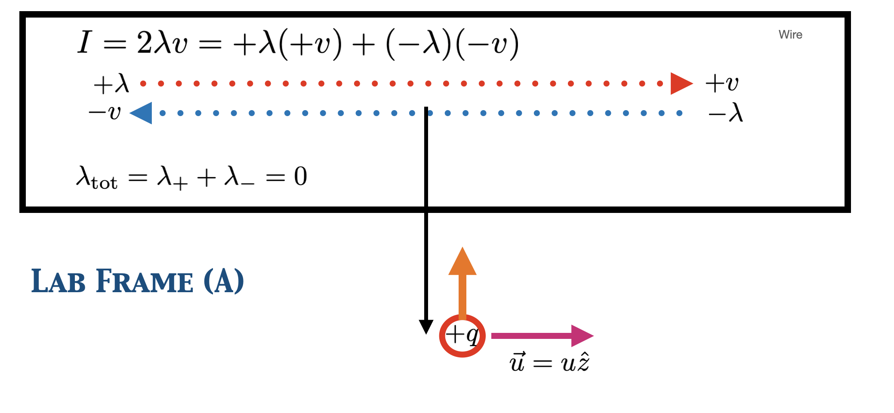

Particle Physics#
This is how to have the image change with mouse over. The images have to be in the “_static” directory.

Chickenhouse Experiments#
Example of how to include VPython simulation
Animation of a simplified schematic of a Michelson interferometer. A laser, represented by the red cylinder to the left, shines a beam to the right. The light is split by a diagonal half-silvered mirror. Half the beam continues to the right, while half the beam goes up. Each of these half-beams is reflected from a flat mirror back along the incoming path. In the animation, the reflected beam is shifted slightly toward the viewer – rotate the image to see the difference clearly. The reflected beams then recombine at the splitter, resulting in an outgoing downward beam that is the sum of the two beams. The animation begins in a world with no ether. If you click on the checkbox below the animation, you can turn on an ether, and the slider will rotate the direction of the relative motion between the ether and the apparatus. Waves going with the ether are stretched out, while waves heading upstream are squished. By rotating the direction, you can see that the outgoing beam varies dramatically based on the angle. No such dependence was ever observed.#
Book Overview#
Example of how to include an image in a figure.